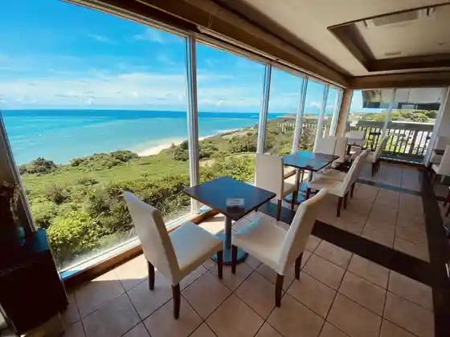
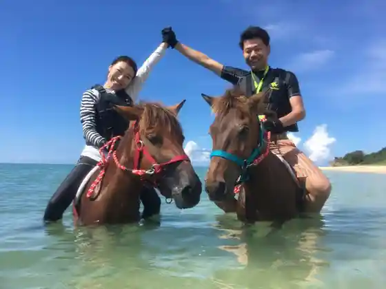

Cafe Yabusachi
Nanjo, Okinawa · 098-949-1410 · Official / source link

KATACHIKI
Nanjo, Okinawa · 098-917-0708 · Official / source link
cafooca
Nanjo, Okinawa · 090-6866-5674 · Official / source link
Azama Sansan Beach
Nanjo, Okinawa · 098-948-3521 · Official / source link
Umikaze Hosu Farm
Nanjo, Okinawa · 090-6869-5788 · Official / source link

Okinawa Warudo
Nanjo, Okinawa · 098-949-7421 · Official / source link
Karin Rirakuzeshon & Supa
Nanjo, Okinawa · 070-5411-4919 · Official / source link
Ganju Eki Nanjo
Nanjo, Okinawa · 098-948-4660 · Official / source link
Sashi Kusaya joy Workshop & Chaya
Nanjo, Okinawa · 098-988-1209(080-8397-6373) · Official / source link
Wakuwaku Taiken Nachura eco Tsurizumu
Nanjo, Okinawa · 050-3636-2270 · Official / source link
Atorie + Shoppu COCOCO
Nanjo, Okinawa · 090-8298-4901 · Official / source link
Iontaun Nanjo Osato
Nanjo, Okinawa · Official / source link
Gangara no Tani
Nanjo, Okinawa · 098-948-4192 · Official / source link
Komaka Shima
Nanjo, Okinawa · Official / source link
Komaka Mujin Shima
Nanjo, Okinawa · 098-948-3355 · Official / source link
Supotsukarucha Center Peare
Nanjo, Okinawa · 098-947-6897 · Official / source link
Teda O Kawa (Shi Shitei Historic Site)
Nanjo, Okinawa · Official / source link
Nirai Hashi Kanai Hashi
Nanjo, Okinawa · Official / source link
Pawasupotto Shiawase no Kakehashi
Nanjo, Okinawa · 098-948-4660 · Official / source link
Yaharazukasa (Shi Shitei Yukei Minzoku Bunkazai)
Nanjo, Okinawa · Official / source link
Kudaka Shima
Nanjo, Okinawa · Official / source link
Naka Village Kyo Hikawa (Kuni Shitei Juyo Bunkazai)
Nanjo, Okinawa · Official / source link
Sashiki Ue Gusuku (Shi Shitei Historic Site)
Nanjo, Okinawa · Official / source link
Nanjo Sashiki Ji Tomi So Saki Coast no Hamajincho Gunraku
Nanjo, Okinawa · Official / source link
Nanjo Chiiki Bussan Kan
Nanjo, Okinawa · Official / source link
Nanjo Art Museum
Nanjo, Okinawa · 098-975-7616 · Official / source link
Jusui Hashiudo
Nanjo, Okinawa · Official / source link
Kakihana Hikawa
Nanjo, Okinawa · Official / source link
Oshiro Castle Ruins (Shi Shitei Historic Site)
Nanjo, Okinawa · Official / source link
Tennen Onsen Sashiki no Enjin Baths
Nanjo, Okinawa · Official / source link
O Shima Imaiyu Market
Nanjo, Okinawa · Official / source link
O Shima (Nanjo)
Nanjo, Okinawa · Official / source link
Saijo Ontake / Midori no Kan Sefa
Nanjo, Okinawa · Official / source link
Niihara Beach
Nanjo, Okinawa · Official / source link
Nami −Nami Okinawa−
Nanjo, Okinawa · 080-7828-7776 · Official / source link
Hamakawa Ontake (Shi Shitei Historic Site)
Nanjo, Okinawa · Official / source link
Ryukyu Garasu Okoku Kobou Oya (Ufuya)
Nanjo, Okinawa · Official / source link
Ryukyu Shinwa Seichi (Kudaka Shima / Ishiki Hama) Kara Nagame Ru Shonichi no Shutsu Kuruzu
Nanjo, Okinawa · 098-941-6828 · Official / source link
Iyashi no Saron & Gyararii Amayama Soan
Nanjo, Okinawa · 080-8557-0311 · Official / source link
Hyaku Ju to Yo no Haka
Nanjo, Okinawa · Official / source link
Hyaku Mei Beach
Nanjo, Okinawa · Official / source link
Chinen Castle Ruins (Kuni Shitei Historic Site)
Nanjo, Okinawa · 098-917-5374 · Official / source link
Chinen Okawa (Chinen'ukka)
Nanjo, Okinawa · Official / source link
Chinen Misaki Park
Nanjo, Okinawa · Official / source link
Chinen Kaiyo Reja Center
Nanjo, Okinawa · 098-948-3355 · Official / source link
Itokazu Abuchiragama Annai Center
Nanjo, Okinawa · Official / source link
Bi Ra Ichigo Nanjo Hausu
Nanjo, Okinawa · Official / source link